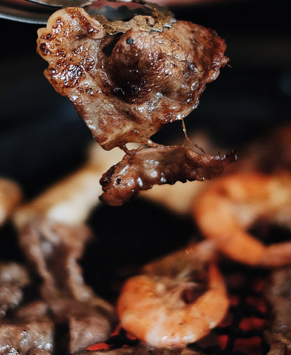
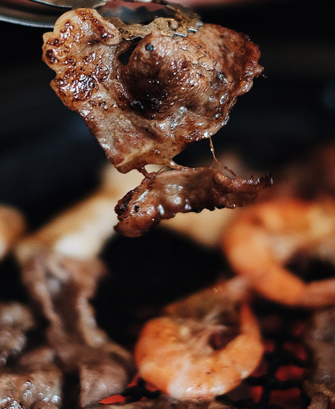

Nuestro Menú
Explora nuestra variedad de platos que deleitan el paladar.
Descubre la mejor carne y el marisco más fresco en Restaurante Contoso. ¡Una experiencia culinaria inigualable!
Descubre nuestra deliciosa cocina con ingredientes frescos y recetas únicas.
Explora nuestra variedad de platos que deleitan el paladar.
Estamos ubicados en el corazón de la ciudad, listos para atenderte.